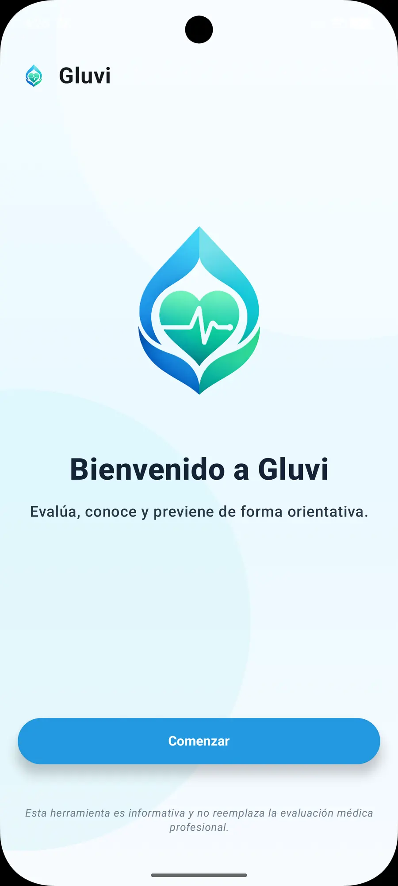
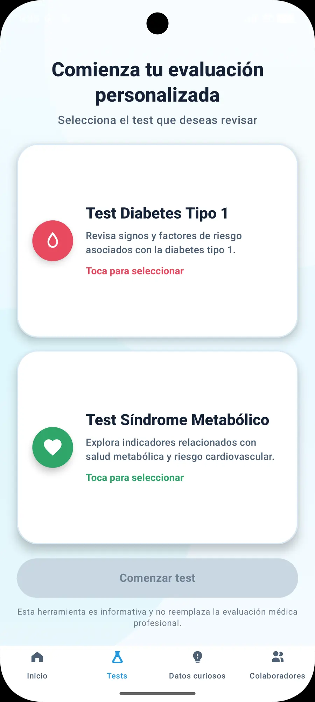
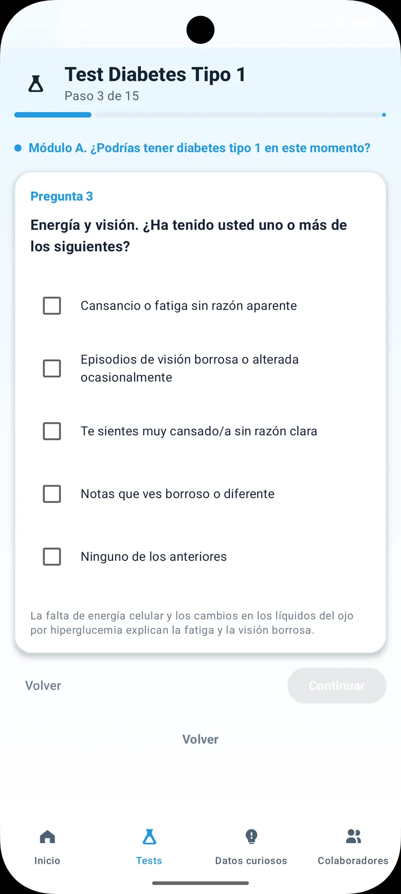
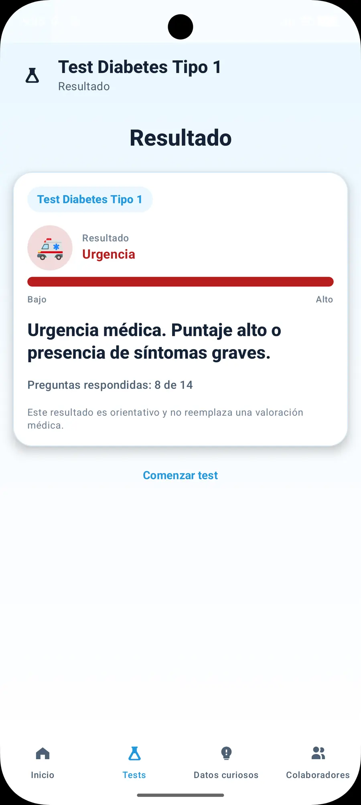
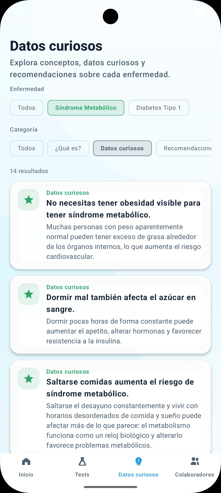
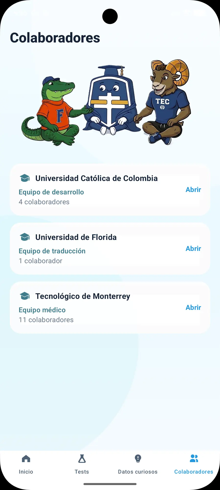
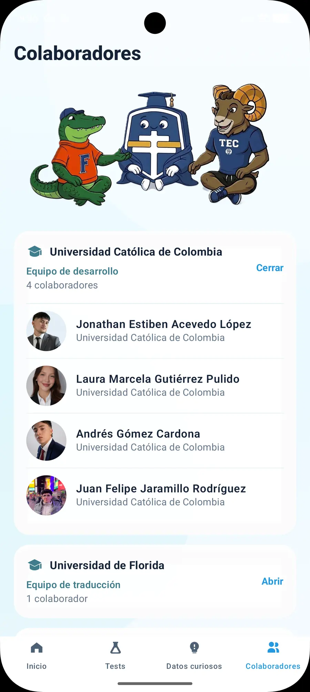

Cuestionarios interactivos
Preguntas sobre diabetes tipo 1 y síndrome metabólico para explorar posibles factores de riesgo asociados a estas condiciones.
Proyecto · Aplicación móvil
Tecnología que invita
a cuidarse.
Una aplicación móvil enfocada en la educación, prevención y orientación sobre la diabetes tipo 1 y el síndrome metabólico.

Diseñada para informar y orientarTres universidades · Un propósito
Gluvi nació de una colaboración internacional que une desarrollo de software, innovación tecnológica y trabajo en equipo para crear soluciones digitales con impacto social.
Acerca de la aplicación
Desarrollada en Android Studio, Gluvi acerca la información de salud a los usuarios de forma clara y accesible.
Preguntas sobre diabetes tipo 1 y síndrome metabólico para explorar posibles factores de riesgo asociados a estas condiciones.
A partir de las respuestas proporcionadas, los usuarios pueden conocer su nivel de riesgo estimado mediante una presentación clara de los resultados.
Datos de interés y recomendaciones generales de salud que fomentan el autocuidado y la toma de decisiones informadas.
Gluvi no es una herramienta de diagnóstico médico. Su función es exclusivamente informativa y orientativa; los resultados no sustituyen una valoración realizada por profesionales de la salud.
Participé en la implementación de los cuestionarios interactivos sobre diabetes tipo 1 y síndrome metabólico, desarrollando la lógica que conecta las respuestas de los usuarios con sus resultados.
Implementé la asignación de puntajes a las respuestas proporcionadas por los usuarios.
Desarrollé la lógica de cálculo de los resultados de los cuestionarios.
Integré la clasificación de los niveles de riesgo según las respuestas de cada usuario.
Una funcionalidad clave para que los usuarios obtuvieran orientación informativa sobre sus posibles factores de riesgo de manera clara y accesible.
La aplicación
Desde la bienvenida hasta los cuestionarios y sus resultados. Selecciona una captura para verla en tamaño completo.





